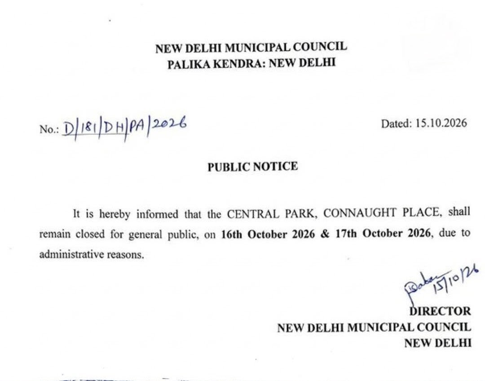

प्रतिप्रश्न भारत
चौथा स्तंभ, जन-जन के संग • राष्ट्रीय दैनिक ई-अखबार
मेरठ का सौरभ राजपूत हत्याकांड: 'शरद बिरधीचंद' के पंच-सिद्धांत, Adipocere का विज्ञान और धारा 351 BNSS; अदालत ने परिस्थितिजन्य साक्ष्यों से कैसे कसी न्याय की नकेल
.png)
लक्ष्मी नारायण वशिष्ठ
मुख्य संपादक एवं संस्थापक | प्रतिप्रश्न भारत
⚖️ विधिक एवं न्यायिक समीक्षक • मुख्य विश्लेषक (न्यायशास्त्र एवं सुशासन)
मेरठ/नई दिल्ली: मेरठ के जिस सौरभ राजपूत हत्याकांड ने पूरे प्रदेश को झकझोर कर रख दिया था, उसमें जिला एवं सत्र न्यायालय का विस्तृत कानूनी विश्लेषण अब सामने आ चुका है। पाठक इस रोंगटे खड़े कर देने वाली वारदात की पृष्ठभूमि से भली-भांति वाकिफ हैं, लेकिन एक न्यायिक संपादक के नज़रिए से देखें तो इस मामले का असली महत्व केवल अपराध की बर्बरता में नहीं, बल्कि इस बात में है कि अदालत ने बिना किसी प्रत्यक्षदर्शी के, केवल परिस्थितिजन्य साक्ष्यों (Circumstantial Evidence) के ताने-बाने को कानून की सख्त कसौटी पर कैसे कसा है।
1. 'शरद बिरधीचंद' के पंच-सिद्धांतों पर परखी गई कड़ियां: चूंकि इस जघन्य हत्याकांड का कोई प्रत्यक्षदर्शी गवाह नहीं था, पूरा मामला परिस्थितियों की अखंड श्रृंखला पर टिका था। अदालत ने सर्वोच्च न्यायालय के ऐतिहासिक शरद बिरधीचंद सरदा और अद्यतन राजा नायकर (2024) व जय प्रकाश यादव (2026) मामलों की नज़ीर लेते हुए यह स्पष्ट किया कि परिस्थितिजन्य साक्ष्य में "शायद" (May be) और "अवश्य" (Must be) के बीच का अंतर ही न्याय की धुरी है। अभियोजन को साबित करना था कि अपराध केवल और केवल अभियुक्तों द्वारा ही संभव था।
2. बचाव पक्ष की तकनीकी दलीलें और अदालत का विवेक: बचाव पक्ष की ओर से पूरी सुनवाई के दौरान जांच की तकनीकी खामियों को सबसे बड़ा ढाल बनाने की कोशिश की गई—फिर चाहे वह गिरफ्तारी या पंचनामे की वीडियोग्राफी का न होना हो, एफआईआर के 'एंटी-टाइम्ड' होने का आरोप हो, या फिर थाने व कंट्रोल रूम की पुरानी सीसीटीवी फुटेज/वायरलेस रिकॉर्ड का नष्ट हो जाना हो। अदालत ने धनज सिंह, सी. मुनियप्पन और वी.के. मिश्रा मामलों का हवाला देते हुए कानून की बेहद अहम व्यवस्था रेखांकित की—"जांच अधिकारी की चूक या लापरवाही मात्र से अभियोजन का ठोस और विश्वसनीय मामला खारिज नहीं किया जा सकता"।
3. वैज्ञानिक साक्ष्य और 'Adipocere' का चिकित्सीय प्रमाण: 14 दिन बाद सीलबंद ड्रम से निकले शव की स्थिति को लेकर बचाव पक्ष ने पहचान पर संदेह खड़ा करने की कोशिश की थी। लेकिन डॉ. मोदी की 'मेडिकल ज्यूरिसप्रूडेंस' और पोस्टमार्टम साक्ष्यों के आधार पर अदालत ने माना कि सीमेंट और रेत के सीलबंद वातावरण में शरीर में 'Adipocere Formation' (मोमीकरण) हुआ, जिसने न केवल शव को सुरक्षित रखा बल्कि वारदात की सटीक टाइमलाइन (3-4 मार्च) की भी वैज्ञानिक पुष्टि कर दी।
4. आचरण और धारा 351 BNSS का कानूनी पेंच: न्यायिक दृष्टि से सबसे दिलचस्प मोड़ अभियुक्तों के धारा 351 BNSS (पूर्व धारा 313 CrPC) के तहत दिए गए बयानों में दिखा। हत्या और बरामदगी से मुकरने वाले दोनों आरोपियों ने यह स्वीकार कर लिया कि वे घटना के तुरंत बाद कैब बुक कर शिमला, मनाली और कसौली के होटलों में एक साथ ठहरे थे। अदालत ने माना कि पति के वर्षों बाद विदेश से लौटने के तुरंत बाद प्रेमी के साथ एक ही कमरे में ठहरना उनके अपराध के हेतु (Motive) और आचरण (Subsequent Conduct) की वह सबसे मजबूत कड़ी बन गई, जिसने संदेह की कोई गुंजाइश नहीं छोड़ी।
कनॉट प्लेस के सेंट्रल पार्क पर NDMC का ताला: CJP के 'तिरंगा मार्च' व INDIA गठबंधन से डरी केंद्र सरकार? 'AA इंजन' को चुनौती देते युवाओं के आगे प्रशासन बैकफुट पर

📷 NDMC द्वारा जारी आधिकारिक सार्वजनिक नोटिस (16 व 17 अक्टूबर सेंट्रल पार्क बंदी)
नई दिल्ली: नई दिल्ली नगरपालिका परिषद (NDMC) द्वारा 16 और 17 अक्टूबर को कनॉट प्लेस स्थित ऐतिहासिक सेंट्रल पार्क को आम जनता के लिए बंद करने का आदेश केवल एक सामान्य प्रशासनिक कदम नहीं, बल्कि छात्रों और विपक्षी एकजुटता से उपजी सरकारी घबराहट का स्पष्ट प्रमाण है। कॉकरोच जनता पार्टी (CJP) द्वारा प्रस्तावित 'लहरा दो तिरंगा' मार्च और विपक्ष के INDIA गठबंधन के कड़े रुख के बीच सत्ता पक्ष की यह पाबंदी यह दिखाती है कि 'AA इंजन' की व्यवस्था अब युवाओं के सीधे तीखे सवालों से असहज हो चुकी है।
• नोटिस का सच: पालिका केंद्र के नोटिस में मात्र "प्रशासनिक कारण" लिखकर असल में युवाओं के शांतिपूर्ण विरोध प्रदर्शन और तिरंगा मार्च को रोकने का प्रयास किया गया है।
• युवाओं का प्रतिरोध: खुद को उपेक्षित मानकर 'कॉकरोच' के नाम से संगठित हुए युवा अब सत्ता के भारी-भरकम तंत्र को सीधे चुनौती दे रहे हैं।
सुप्रीम कोर्ट में केंद्र और दिल्ली पुलिस का बिना शर्त माफीनामा: शांतिपूर्ण विरोध पर पाबंदियों पर अदालत सख्त; वैश्विक मंचों पर भी लोकतंत्र की छवि पर उठे सवाल
नई दिल्ली: राजधानी में नागरिकों के लोकतांत्रिक और शांतिपूर्ण विरोध प्रदर्शनों को रोकने के नाम पर मेट्रो स्टेशनों को बंद करने, इंटरनेट सेवाओं पर मनमानी रोक लगाने और धारा 144 के अंधाधुंध इस्तेमाल पर देश की सर्वोच्च अदालत में सरकार को भारी असहजता का सामना करना पड़ा है। सर्वोच्च न्यायालय की सख्त फटकार के बाद गृह मंत्रालय और दिल्ली पुलिस आयुक्त को बिना शर्त लिखित माफीनामा पेश करना पड़ा।
.png)
"सपने वो नहीं जो हम सोते हुए देखते हैं, सपने वो हैं जो हमें सोने नहीं देते।" — डॉ. एपीजे अब्दुल कलाम
कलाम के सपनों का भारत और सत्यनिष्ठा का उद्घोष: 15 अक्टूबर जयंती पर स्वतंत्र मंच 'प्रतिप्रश्न भारत' का शंखनाद
लक्ष्मी नारायण वशिष्ठ
मुख्य संपादक एवं संस्थापक

केंद्रीय सतर्कता आयोग (CVC)
सत्यनिष्ठा प्रतिज्ञा प्रमाणपत्र
नई दिल्ली: 15 अक्टूबर केवल एक तारीख नहीं, बल्कि उस वैज्ञानिक चेतना, नैतिक शुचिता और अदम्य राष्ट्र-दृष्टि का स्मरण पर्व है, जिसे 'मिसाइल मैन' डॉ. एपीजे अब्दुल कलाम ने भारत की आत्मा में रोपा था। चौथा स्तंभ केवल सत्ता का दर्पण नहीं, बल्कि जनता की ढाल है।
मुख्य संपादक लक्ष्मी नारायण वशिष्ठ द्वारा केंद्रीय सतर्कता आयोग (CVC) के समक्ष ली गई सत्यनिष्ठा प्रतिज्ञा ही इस मंच का नैतिक संविधान है—न किसी प्रलोभन के आगे झुकना, न दबाव में कलम को मोड़ना और भ्रष्टाचार के विरुद्ध जन-आवाज़ बनना हमारा प्राथमिक दायित्व है।
दिल्ली-एनसीआर की हवा में घुला 'धीमा ज़हर': ग्रैप के कागज़ी फरमानों और ज़मीनी अमल के बीच पिसती आम जनता
नई दिल्ली: हर साल की तरह इस बार भी अक्टूबर का दूसरा पखवाड़ा शुरू होते ही देश की राजधानी और समूचे एनसीआर की आबोहवा में ज़हरीला धुंधलका छाने लगा है। कई इलाकों में वायु गुणवत्ता सूचकांक (AQI) 300 के पार दर्ज हो रहा है। अस्पतालों में सांस के मरीजों में 25% तक वृद्धि हुई है, जबकि करोड़ों के फंड मौजूद होने के बावजूद ठोस असर नहीं दिख रहा है।